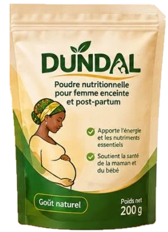
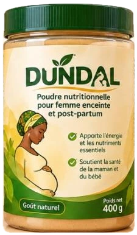
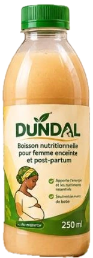

Accompagner la continuité de la supplémentation pendant la grossesse, avec des plantes d'Afrique de l'Ouest
Dundal : « subsistance » en peul.



Recommandation OMS : une prise quotidienne pendant toute la grossesse.
Sénégal, données nationales. Micronutrient Forum / HMHB, profil pays Sénégal (avril 2026).
des femmes enceintes sont anémiées au Sénégal
OMS, 202315 profils (Dakar, Thiès, Kaolack, Mbour, Diourbel, Saint-Louis) · jours de prise sur 7 selon la cause de la dernière interruption
profils comportent au moins un jour sans prise. Moyenne : 4,3 jours sur 7.
Ce goût me restait longtemps dans la bouche. J'ai laissé le sachet de côté pendant quatre jours.
La boîte en pharmacie était trop chère. Le supplément gratuit n'était pas disponible non plus.
Je suis partie tôt au travail sans mon produit. Ensuite, la journée a passé sans que j'y repense.
Une proche m'a dit que les comprimés faisaient trop grossir le bébé. Cela m'a fait peur.
Le soir, quand je prends mon repas, je pense au fer. Si je ne mange pas à la maison, j'oublie.
Une petite quantité de poudre dans un verre me tenterait davantage qu'un gros comprimé.
Moringa feuille, spiruline et baobab. Sans fer ajouté, sans hibiscus. Valeur nutritionnelle à établir sur la composition mesurée par dose.
Une boisson simple à préparer, au goût apprécié, à dose claire. La poudre ne rend pas le comprimé plus petit : son acceptabilité propre sera testée.
Notice illustrée français-wolof, conseil de la sage-femme, rappels WhatsApp individuels et facultatifs pour DUNDAL® et pour le fer prescrit.
Promesse à tester« Une portion mesurée en boisson, au goût apprécié et à la composition contrôlée, pour compléter mon alimentation en poursuivant mon fer prescrit. »Aucune substitution au fer prescrit
Feuille uniquement. Quantité à fixer, apports à analyser.
Cultivée et contrôlée, certificat d'analyse par lot. Maintien soumis à avis spécialisé.
Quantité à fixer. Goût et composition à tester.
| Format | Durée à la dose | Prix public envisagé | Rôle |
|---|---|---|---|
| 100 g | ≈ 15 jours | Après devis | Premier achat |
| 200 g | ≈ 30 jours (une cure) | 7 500 FCFA | Format de référence |
| 500 g | ≈ 75 jours | Après devis | Cure longue, fidélisation |
Proportions, dose, stabilité et coût restent à valider. Durées calculées sur l'ancienne hypothèse de 7 g/jour, recalculées avant le pilote.
Contenu pertinent, en complément de l'alimentation et du fer prescrit.
Préparation simple, goût apprécié : raisons possibles de choisir la poudre.
Composition, dose et traçabilité lisibles ; contrôles par lot.
Achats et rachats à 7 500 FCFA mesurés au pilote ; refus consignés.
À 7 500 FCFA, la porte G3 exige un coût de revient ≤ 2 750 FCFA (après marge officinale de 30 % et 200 FCFA de suivi). 5 500 et 6 500 FCFA restent des variantes à tester.
Mélange pilote de 1 kg, hypothèse de développement, sourcing des matières premières.
Nutrition, microbiologie, métaux lourds, toxines ; goût, solubilité, stabilité ; avis grossesse, position ARP.
Ingrédients d'Afrique de l'Ouest, messages nutrition et bien-être. Aucune allégation santé.
FCFA par an à 1,41 cure par cliente (faible fidélité)
FCFA par an à 4 cures par cliente
Calcul : femmes × cures × 7 500 FCFA. Part prête à acheter (20 à 40 %, EDS 2023) : hypothèse à examiner.
Gratuit selon le dispositif décrit.
Pilote dans 13 structures de Thiès depuis 2024 ; prix proche du fer-acide folique (UNICEF, 2026).
11 produits enregistrés à l'ARP ; prix publiés de 4 721 à 5 425 FCFA pour 30 jours.
7 achats privés et 8 sans achat privé sur 15 profils.
Notre terrain : une boisson nutritionnelle choisie, complémentaire du fer prescrit, avec un accompagnement que les autres offres n'apportent pas.
FCFA de contribution par cure à l'échelle
Coûts de revient historiques (4 161 et 3 403 FCFA) à rechiffrer sans hibiscus. Canaux : 5 officines pilotes, recommandation des sages-femmes sans incitation, coupons codés.
Choisissez un nombre de cures par cliente · 4 000 FCFA d'acquisition, 15,3 M FCFA de frais fixes annuels (rémunération de la fondatrice incluse)
FCFA de contribution par cliente, après acquisition
clientes nécessaires par an
du marché accessible bas (13 000 femmes)
| Rachat mensuel | Grossesse (≈ 5 mois) | + post-partum (≈ 11 mois) |
|---|---|---|
| 60 % | 2,3 | 2,5 |
| 70 % | 2,8 | 3,3 |
| 80 % | 3,4 | 4,6 |
| 90 % | 4,1 | 6,9 |
≈ 4,3 cures suppose une fidélité élevée et, pour certaines clientes, une poursuite après l'accouchement si cet usage est jugé sûr. Douze semaines de pilote mesurent des renouvellements précoces, pas onze mois de fidélité.
« Dans un programme, une bonne idée se défend devant un bailleur ; dans une entreprise, elle se vérifie à la caisse d'une officine. »
Rokia Sissoko · quinze ans de programmes de santé publique
En 2013, chez PSI Mali, lancement d'Orasel Zinc, de la conception aux tests, à la communication et à la distribution. La leçon : une innovation de santé n'est utile que si elle correspond aux pratiques, et si prix, disponibilité et accompagnement rendent l'adoption possible.
Comment je compense : m'entourer de pharmaciens dès maintenant, et fixer par écrit des seuils de décision avant d'avoir les résultats.
Pilotage, partenaires, changement de comportement en santé publique.
En placeRevue de la formulation et de l'approvisionnement.
MobiliséDose, position sur la formule, messages.
MobiliséDossier MTA, qualité, libération des lots.
À identifierComposition, microbiologie, métaux lourds, stabilité.
À sélectionnerPilote commercial et accompagnement.
Décision BAujourd'hui, l'équipe, c'est moi, et aucun financement n'est encore acquis. Ma crédibilité repose sur mon parcours, la rigueur du dossier, et des données à chaque rendez-vous.
1 450 000 FCFA · formulation, sécurité, demande à l'ARP. Aucune vente pendant cette phase.
Petit lot au coût devisé, 5 officines, 12 semaines. Déficit plafonné et financé.
Déploiement progressif, contrôle du rachat et de la trésorerie.
Dépenses complètes / nouvelles clientes payantes
Rachats confirmés / clientes arrivées à échéance
Coût ≤ 2 750 FCFA à 7 500 FCFA
Avis de sécurité, position ARP, autorisations
A+B et réserve de 10 % sécurisées ; scénario défavorable
Règle : une preuve manquante reporte la décision. Aucun critère manquant ne devient favorable par défaut. Pas d'extension sous 2 300 FCFA de contribution.
nouvelles clientes adultes enceintes, ≈ 19 par officine, incluses en semaines 1 à 3
officines proches d'une structure de consultation prénatale
semaines, avec revue hebdomadaire fondatrice et officine
pots à 80 % de renouvellement (95 + 76 + ≈ 61) ; scénario haut : 285
Recueil : produit actuel, prise du fer sur 7 jours, budget, notice
Premier contact
Bilan : achats, usage déclaré, goût, abandons
Bilan : rachats, prise du fer séparément
Clôture · examen G1 à G5
Bien manger et prendre son fer jusqu'au bout.
Activités communautaires · Bajenu Gox, groupements de femmes, démonstrations de recettes
Mon fer, chaque jour, jusqu'au bout.
Causeries de 20 minutes en salle d'attente avec la sage-femme · carte-calendrier à cocher
Sage-femme au micro.
Spots radio en wolof et en français · vidéos verticales de 15 à 30 s
Budget pilote : 280 000 FCFA, soit 2 947 FCFA par cliente, sous le plafond G1 de 4 000 FCFA. Coupons codés par canal (COM, VID, RAD) pour mesurer.
FCFA · financement initial
Recettes attendues au pilote : 1 218 000 FCFA (232 pots × 5 250). Besoin net du pilote : 3 323 400 FCFA.
Analyser les causes ; adapter dans le cadre autorisé ; pas d'extension si G2 manque.
Tester un prix inférieur et recalculer G3 ; adapter ou suspendre si la contribution cible reste hors de portée.
Suspendre la formule concernée ; réexaminer et obtenir les avis avant toute reprise.
Revoir le statut ; aucune vente avant autorisation.
Lot refusé ; changement de fournisseur.
Orienter vers le soignant et documenter ; ne pas recommander de prise simultanée sans avis.
Décider sur preuves, et accepter qu'une idée de départ ne réponde pas tout à fait à ce que vivent les femmes.
Études, puis pilote de 12 semaines dans 5 officines, uniquement après autorisations et financement.
A : études financées · B : G3, G4 et G5 préalablesRéseau officinal élargi à Dakar ; premier contrat institutionnel ; ≈ 1 400 à 2 000 clientes.
C : G1 à G5 documentéesAutres villes.
Rentabilité de Dakar démontréeFinancer les études pour établir la formule, sa sécurité et la position de l'ARP. Aucune vente ni prise de produit actif pendant cette phase.